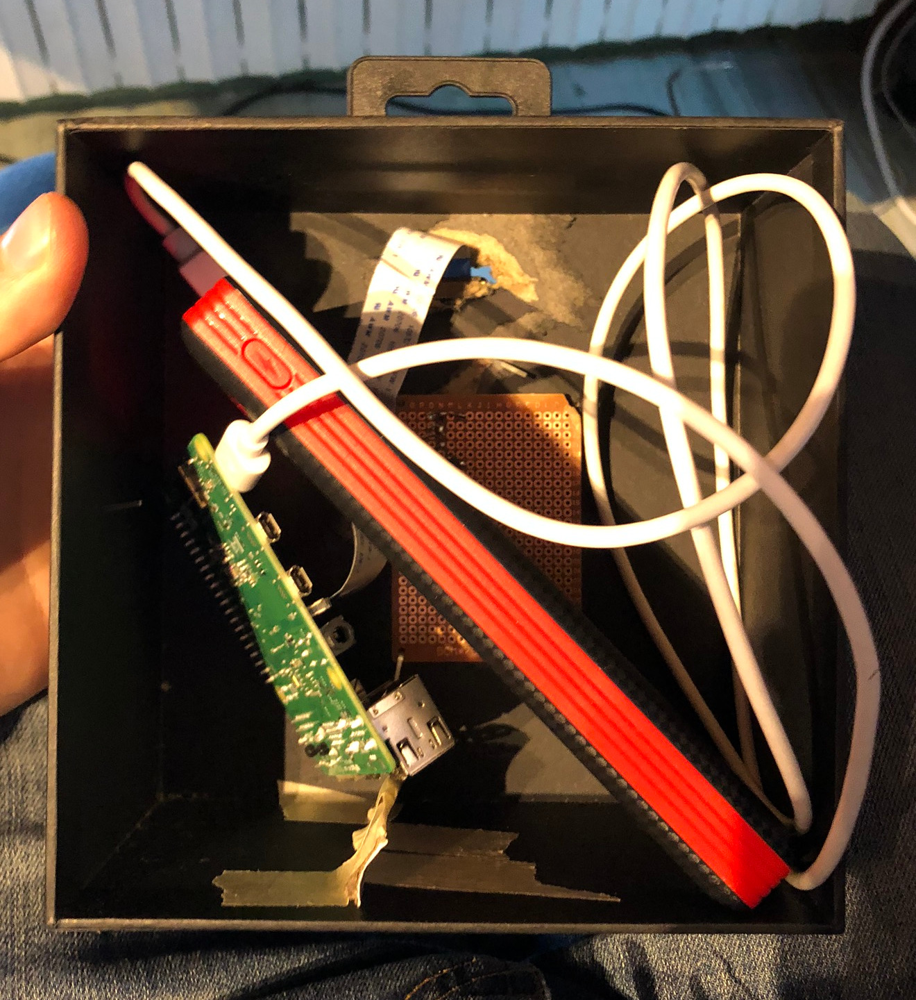

Camera Trap with a Rapsberry PI
During the lockdown, I was observing at birds at my window and wondering that I'd like to see them from closer. I also happened to be in possetion of a Raspberry Pi with a super cool Pi camera v2.1 NoIR.
So, with my friend Johan (You can check out his own website, he is a great physicist and my adventure companion, go at this link) we decided to 'build' (that's a big word) a little box, equippe it with: the raspberry pi, some IR lights that we got from some old remotes, the camera and a phone battery.

Though it is really not great design (it was mostly for fun), we would take some great pictures of birds and it was a good practise of computer vision. In a few words, the algorithm looked for difference between the current image and the mean image of the stream.